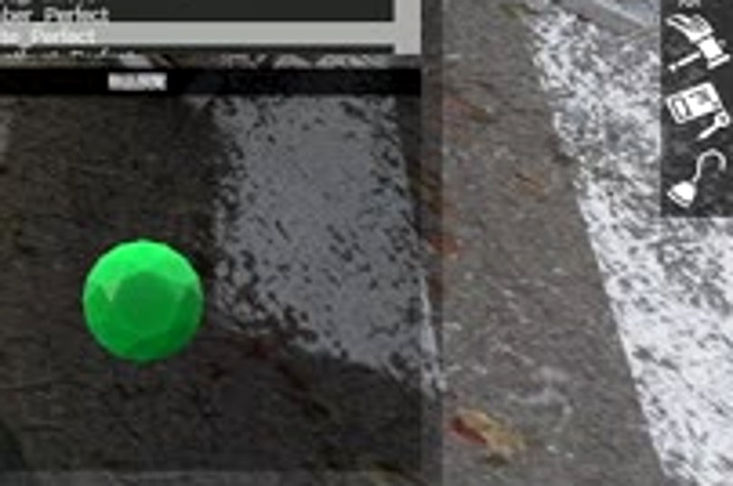
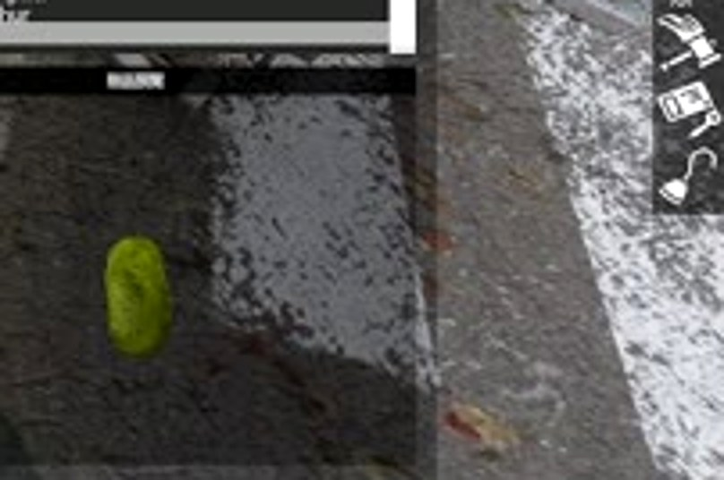
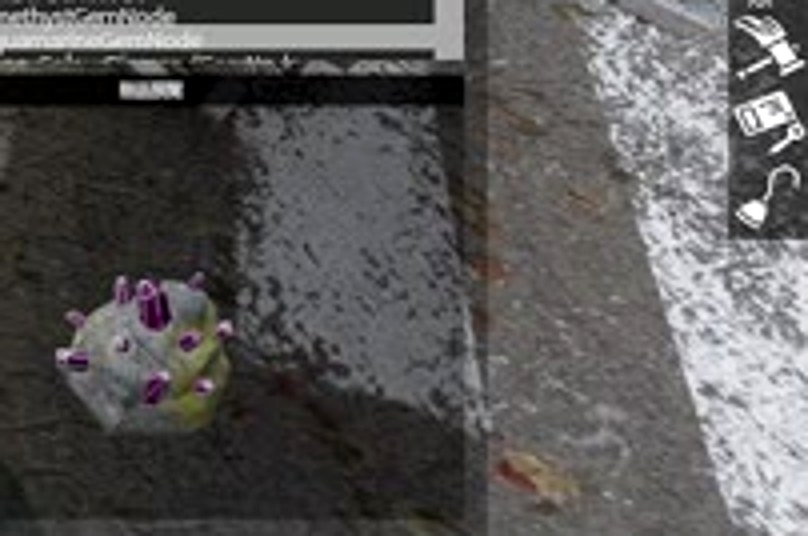
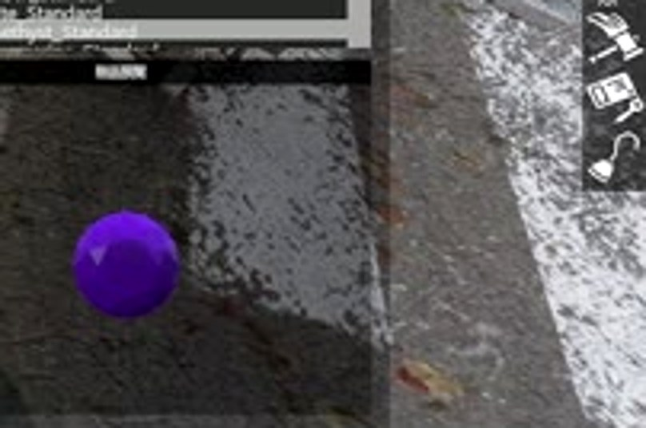
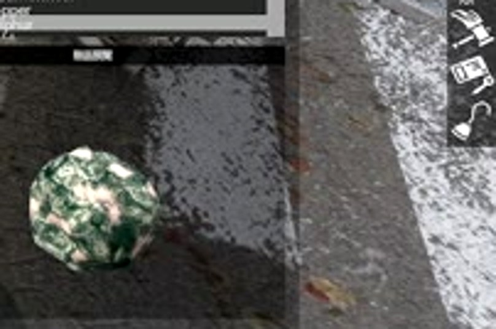
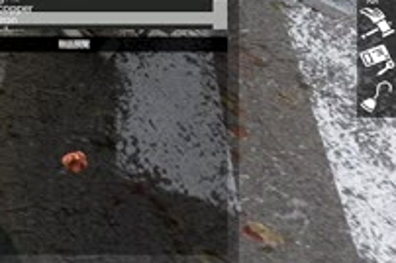
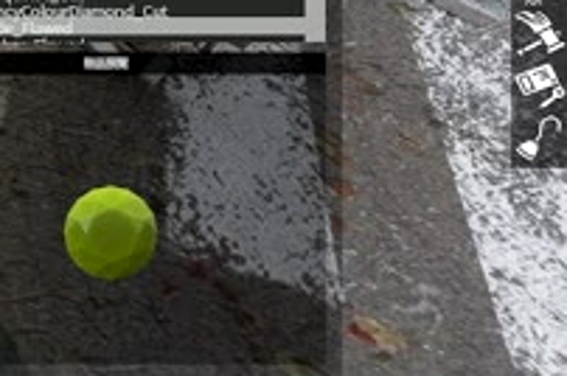
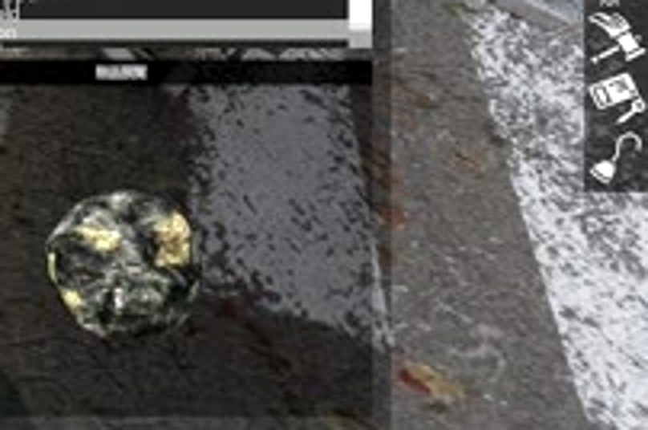
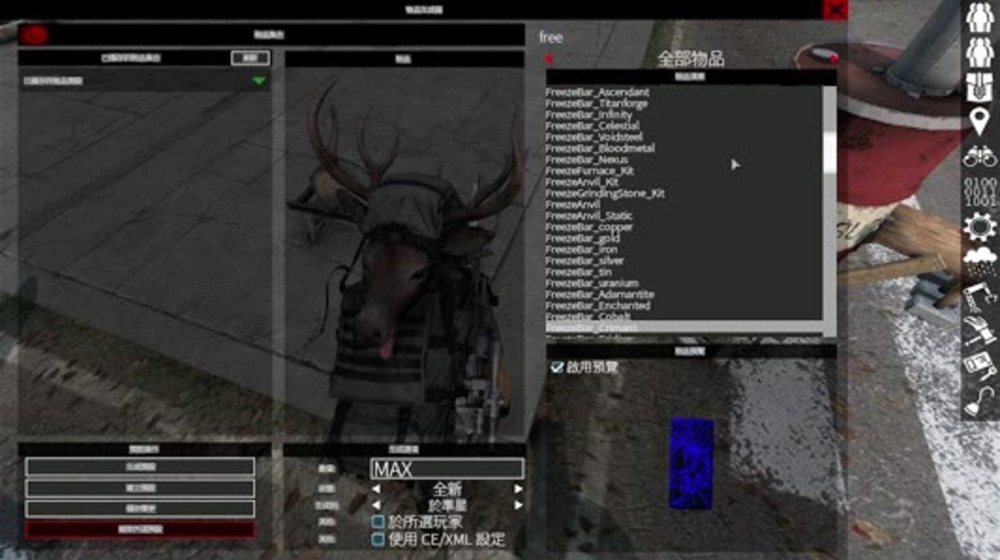

尋找礦脈
探索地圖中的礦脈節點，準備適合的採礦工具後開始採集。
從礦脈採集原料，經過熔煉、寶石切割與鐵砧鍛造，將普通資源逐步轉化成高階製作與裝備強化材料。
挖礦系統不是只把礦石賣掉。採到的礦石與寶石會進入不同加工路線，最後可用於高階製作、特殊礦錠、進階礦鎬，以及 AshZone 的裝備強化系統。
玩家實際遊玩時可依照下面順序處理資源。
探索地圖中的礦脈節點，準備適合的採礦工具後開始採集。
礦脈可產出金屬礦石、硫磺礦石、未加工寶石等資源；實際掉落依伺服器設定。
金屬礦石送往熔煉爐；未加工寶石送往研磨石，進入品質升階流程。
熔煉後的金屬礦粒可在鐵砧鍛造成礦錠，並繼續製作更高階材料。
高品質寶石與金屬材料可進一步製作融合錠、特殊材料與進階採礦工具。
部分加工後的寶石與高階材料會作為 AshZone 裝備強化系統的重要消耗材料。
每種設備負責不同階段，缺一就無法完成完整製作循環。
將銅、黃金、鐵、銀、錫、鈾等礦石熔煉成對應金屬礦粒。使用時需要丙烷氣瓶與丙烷連接管。
切割與拋光未加工寶石。需要安裝研磨輪；目前 AshZone 啟用品質升階，因此初次切割會得到瑕疵品質。
使用鍛造錘將熔煉完成的礦粒鍛造成礦錠，並進一步製作融合錠與高階材料。
一般金屬礦石走「礦石 → 礦粒 → 礦錠」路線；硫磺則有自己的加工用途。
以下圖片擷取自 AshZone 實際遊戲畫面，用來辨識各類寶石外觀與加工路線。

未加工翡翠 → 瑕疵切割翡翠 → 標準切割翡翠 → 完美切割翡翠
同品質 3 合 1，逐階提升寶石品質。
未加工琥珀 → 瑕疵切割琥珀 → 標準切割琥珀 → 完美切割琥珀
同品質 3 合 1，逐階提升寶石品質。
未加工堇青石 → 瑕疵切割堇青石 → 標準切割堇青石 → 完美切割堇青石
同品質 3 合 1，逐階提升寶石品質。
未加工紫水晶 → 瑕疵切割紫水晶 → 標準切割紫水晶 → 完美切割紫水晶
同品質 3 合 1，逐階提升寶石品質。
未加工海藍寶石 → 瑕疵切割海藍寶石 → 標準切割海藍寶石 → 完美切割海藍寶石
同品質 3 合 1，逐階提升寶石品質。
未加工紅寶石 → 瑕疵切割紅寶石 → 標準切割紅寶石 → 完美切割紅寶石
同品質 3 合 1，逐階提升寶石品質。
未加工綠松石 → 瑕疵切割綠松石 → 標準切割綠松石 → 完美切割綠松石
同品質 3 合 1，逐階提升寶石品質。
未加工彩色鑽石 → 瑕疵切割彩色鑽石 → 標準切割彩色鑽石 → 完美切割彩色鑽石
同品質 3 合 1，逐階提升寶石品質。AshZone 目前採用品質進階玩法，初次加工不會直接得到標準或完美寶石。
要從最初的原石一路升到 1 顆完美品質，需要 9 顆未加工的同種類寶石。先將 9 顆全部切割成瑕疵品質，再合成 3 顆標準品質，最後合成 1 顆完美品質。
八種寶石全部遵循相同的 3 合 1 品質升階規則。
| 寶石 | 原始階段 | 第一階 | 第二階 | 第三階 | 1 顆完美所需 |
|---|---|---|---|---|---|
翡翠 | 未加工翡翠 | 瑕疵切割翡翠 | 標準切割翡翠 | 完美切割翡翠 | 9 顆未加工翡翠 |
琥珀 | 未加工琥珀 | 瑕疵切割琥珀 | 標準切割琥珀 | 完美切割琥珀 | 9 顆未加工琥珀 |
堇青石 | 未加工堇青石 | 瑕疵切割堇青石 | 標準切割堇青石 | 完美切割堇青石 | 9 顆未加工堇青石 |
紫水晶 | 未加工紫水晶 | 瑕疵切割紫水晶 | 標準切割紫水晶 | 完美切割紫水晶 | 9 顆未加工紫水晶 |
海藍寶石 | 未加工海藍寶石 | 瑕疵切割海藍寶石 | 標準切割海藍寶石 | 完美切割海藍寶石 | 9 顆未加工海藍寶石 |
紅寶石 | 未加工紅寶石 | 瑕疵切割紅寶石 | 標準切割紅寶石 | 完美切割紅寶石 | 9 顆未加工紅寶石 |
綠松石 | 未加工綠松石 | 瑕疵切割綠松石 | 標準切割綠松石 | 完美切割綠松石 | 9 顆未加工綠松石 |
彩色鑽石 | 未加工彩色鑽石 | 瑕疵切割彩色鑽石 | 標準切割彩色鑽石 | 完美切割彩色鑽石 | 9 顆未加工彩色鑽石 |
高品質寶石不只是收藏品，它們會進入融合礦錠與更高階製作鏈。
融合材料本身也分為瑕疵、標準、完美等階段；再往上可製作昇華礦錠、天界礦錠、無限礦錠、泰坦鍛造礦錠、血金屬錠、虛空鋼錠與核心融合礦錠等高階材料。實際配方需求與用途以 AshZone 伺服器當前設定為準。
在 AshZone，礦石、寶石與高階加工材料不只是挖礦系統內部資源，也會延伸到裝備強化與其他製作用途。玩家可將高品質寶石保留下來，作為武器、防具與進階製作系統的珍貴材料。

採到礦石先想「熔煉爐 → 礦粒 → 鐵砧 → 礦錠」。
採到寶石先到研磨石切割，瑕疵 3 合 1 標準，標準 3 合 1 完美。
拿到完美寶石優先保留給高階融合製作與 AshZone 裝備強化。